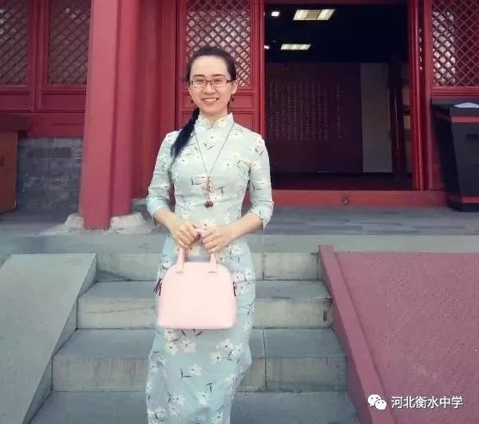

仝十一妹，河北沧州人，生于1987年，毕业于北京大学中文系古典文献专业，现居北京。曾编著《红楼梦名句名段》《戏曲的故事》《一生读书计划》等文化普及类书籍，擅长乡土、文化、成长、励志类散文，以微信公众号“十一姐的涂鸦馆（shiyimm_pku）”为主要平台，年发表原创作品百余篇，曾入选沧州散文十家。

尊敬的老师、亲爱的学弟学妹们：
大家好，我是毕业于2006年的242班学生仝十一妹。 距离最近一次在全校师生面前发言，已经13年了， 那时我刚拿到北大录取通知书，在大礼堂霸气自信地分享自己的高考秘诀，连草稿都不用打的。 而今天来到这里之前，我却有几分忐忑——毕竟，对在座的同学们而言， 我们之间隔着蔡徐坤和周杰伦两代粉丝的年龄差。 当年我们考上北大的还算是稀有物种，学哥学姐给我们接风洗尘只需要包下北大西门鸡翅一个房间。 现在，恐怕要包下西门外边一条街了。
但是，当我真正回到衡中的校园以后，我的忐忑立刻消失了，就像回到家一样亲切。 我发现，虽时过而境未迁，不管是刚进入衡中，还是已经离开多年，我们都被一种同样的气场包围着， 有着衡中人特有的精、气、神。衡中成就我的，不仅是高考的成绩，更是后来的人生中追求卓越的力量之源。 这么多年，高考的题目我已经忘得七七八八，但在衡中积攒的能量却一直推着我在人生的航程上一往无前。
回想刚进入北大的时候，面对着来自全国各地挥斥方遒、文采风流的天之骄子们， 我在知识上、眼界上、生存技能上都跟大家有天壤之别。 我来自农村的普通家庭，没有手机，也不会用电脑，连地铁都没坐过。 更要命的是，我从一入学，就背负了2万4千元的助学贷款。 按照当时的物价水平，这可不是个小数目。 那时我在衡中一天吃饭才花五六块钱，在校外吃一碗牛肉拉面才2块钱。
但是，这些挑战对我来说，跟晚自习收到一摞自助餐没什么区别——因为， 在衡中，我已锤炼出一颗强大到被碾压到极限也能满血复活的心脏。
刚进入衡中时，在初中稳拿第一的我，第一次考试就差点掉出实验班。 一份数学卷子，下课时只能做完选择和填空。 同学们思路飞快，老师刚在黑板上写公式，台下就有人说出了答案。 那时候的我真是焦头烂额。
而当我进入北大，我觉得，有了衡中这碗酒垫底儿，什么困难我都来者不拒！
衡中带给我的，是分秒必争、心无旁骛的自制力，是百折不挠、越挫越勇的韧劲， 是“时时事事争第一”的野心，是“志比云天、谁与争锋”的霸气。 更重要的是，衡中不断刷新的战绩，使我坚信任何奇迹都可以创造。
初入燕园的我，一切从头追赶，从零开始学电脑， 扎入图书馆拼命汲取专业知识，井井有条地安排自己的社团、学生会、社会实践、志愿公益时间。 兼职勤工俭学，没有让家里再出一分钱。 到了大四毕业时，我不但还清了全部助学贷款，而且自己有了一定的积蓄。 在北大那样强手如林的环境里，我仍然获得了北京市优秀毕业生的称号，连续四年跟北大党委书记合影留念。 在走上社会以后，我实现了更多进步，也结识了更多优秀的衡中校友， 我愈加发现，当优秀已经成为习惯，你很难再回到平庸的位置； 当追逐梦想已经尝到甜头，你很难停下追逐下一个梦想的脚步。 面对柴米油盐各种琐事的干扰，面对社会形形色色的各种诱惑，面对职场上浮浮沉沉人生百态， 作为衡中人，我们仍然保持着当年的少年壮志，他强由他强，清风拂山岗；他横由他横，明月照大江！
当然，习惯归习惯，衡中留给我的具体记忆，却绝不因为过程的艰辛而显得压抑或紧张。 当我重返校园时，浮现在脑海中的，不是叠豆腐块，不是量化表，不是违纪通知单， 不是没完没了的卷子和考试。 而是张楠老师从教工食堂里走出来、悄悄留在我们饭桌上一碗水煮肉片。 是中秋之夜，大家品尝着张桂安老师买的月饼，关掉灯、听着王菲唱的《明月几时有》。 是高考之日，年级主任郗会锁老师拎着塑料桶站在路边，给大家分发茶叶蛋。 那些记忆，柔软、温暖、明媚，像许多彩色的泡泡在天空中飘荡，那是幸福的味道，是青春的味道，是奋斗的味道。
这次回到母校，来不及见到每一位老师，我非常非常想念你们，感谢衡中， 感谢我所有的恩师们，祝你们节日快乐，身体健康！
2006届毕业生